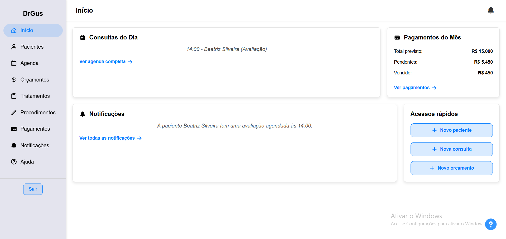
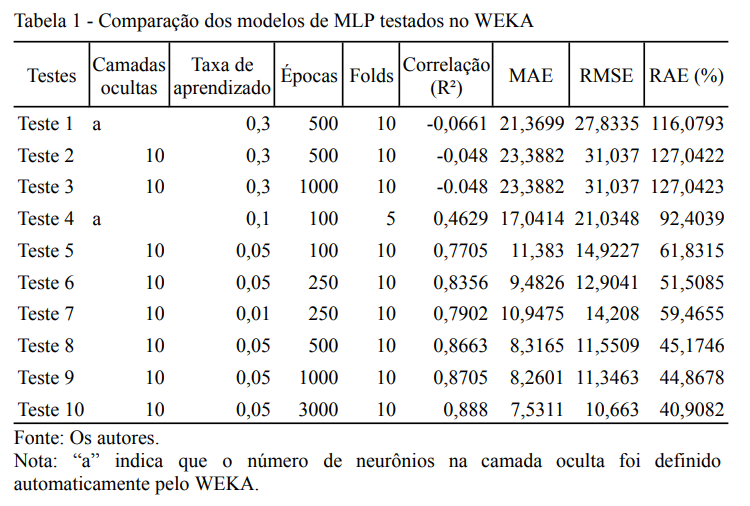

Sobre Mim
Sou estudante de Engenharia de Computação na UEPG, com experiência prática em desenvolvimento Full-Stack e modelagem com Inteligência Artificial. Atuo no desenvolvimento de sistemas web completos, integrando backend, frontend e banco de dados, além da aplicação de técnicas de aprendizado de máquina para problemas reais. Minha formação combina pesquisa científica com publicações acadêmicas e desenvolvimento de software com foco em usabilidade, desempenho e escalabilidade.
Projetos e Pesquisa Científica

DrGus — Gestão Odontológica
Full-Stack Development • PWA
Sistema Full-Stack para gestão de consultório odontológico, desenvolvido como PWA. Integra agendamento de consultas, odontograma digital, registro de anamneses e controle financeiro com notificações de parcelas, focado na automação de processos e organização de dados clínicos.

Modelagem Preditiva com IA
Data Science • Iniciação Científica
Pesquisa em modelagem preditiva aplicada à agricultura, utilizando Redes Neurais MLP no WEKA. O modelo alcançou correlação de 0,888 após otimização de hiperparâmetros, com dados do INMET e da Embrapa Trigo.
Produção Científica:
- CoBICET 2025: Revisão sobre redes neurais na relação clima-doença no trigo.
- EAIC 2025: Modelagem preditiva com MLP e otimização de hiperparâmetros.